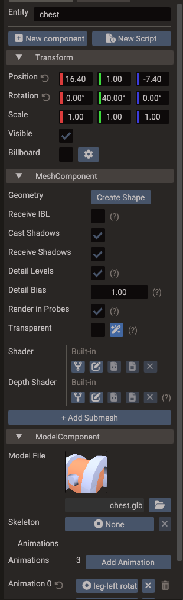
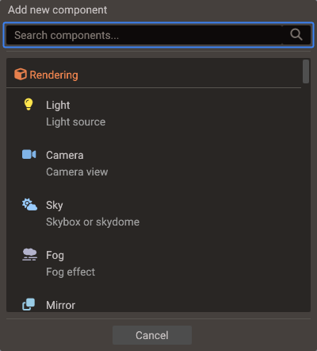
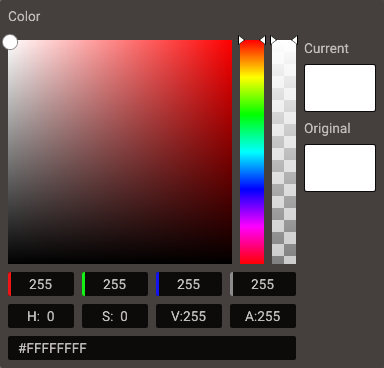
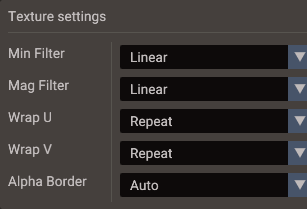
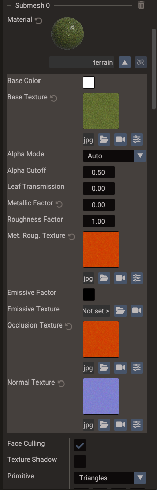
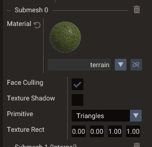
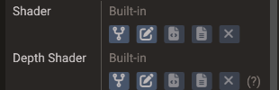
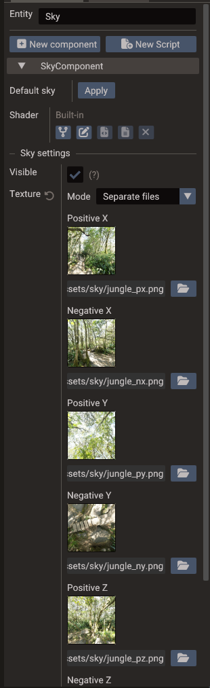
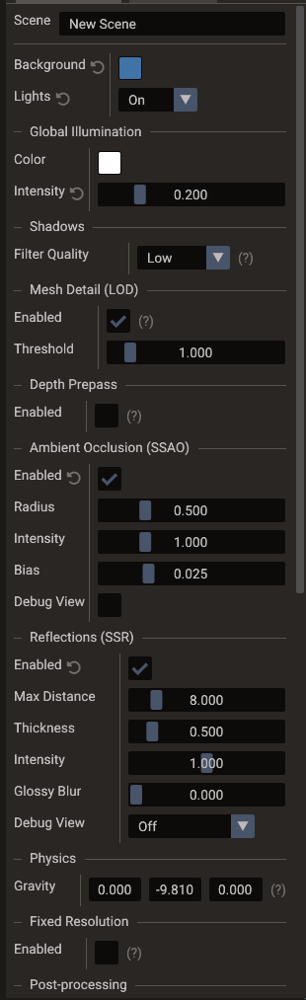
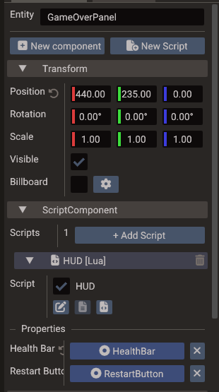

Properties & Components¶
The Properties window displays every component attached to the selected entity and lets you read and change their values. It is the primary place to configure transforms, materials, physics, scripts, UI layout, audio, animations, and any other component data.

Selecting an entity¶
Click an entity in the Structure panel or directly in the Scene view to select it. The Properties window updates immediately to show its components.
The field at the top holds the entity name: edit it to rename the entity, or press F2 anywhere in the scene windows to jump straight into it with the name selected. With several entities selected the field is read-only; with none selected, the window shows the scene settings instead and the same field renames it.
While a scene is playing, an entity the game created (drawn in green in the Structure panel) is shown read-only: you can watch its values change, but not rename it, edit its fields, or add and remove components, because Stop destroys it.
Adding components¶
Use the New component button at the top of the Properties window. A searchable dialog lists all available component types grouped by category; type in its search field to narrow the list. Components are added to the entity immediately and their defaults appear in the panel for editing.

Component groups¶
The dialog groups the components into these categories:
| Category | Components |
|---|---|
| Core | Transform |
| Rendering | Mesh, Light, Camera, Sky, Fog, Mirror, Reflection Probe, Water, Model, Terrain, Instanced Mesh |
| User Interface | UI Base, UI Layout, UI Container, Image, Text, Button, Panel, Scrollbar, Progressbar, Text Edit |
| 2D Graphics | Sprite, 2D Light, 2D Occluder, Sprite Animation, Tilemap, Polygon, Mesh Polygon |
| Primitives | Points, Lines, Particles |
| Physics | 2D Physics Body, 3D Physics Body, 2D Joint, 3D Joint |
| Animation | Animation, Action, Timed Action, Alpha / Color / Position / Rotation / Scale Action, Bone, Keyframe Tracks, Morph / Rotate / Scale / Translate Tracks |
| Sound & Script | Sound, Script |
Editing component fields¶
Most fields are edited with the mouse or keyboard directly in the panel:
| Field type | Editing method |
|---|---|
| Numbers (float, int) | Click and drag, or double-click to type a value |
| Vectors (Vector2, Vector3) | Per-component drag or type fields |
| Colors | Color picker with RGBA, HSV, and hex fields |
| Booleans | Toggle checkbox |
| Strings | Inline text input |
| Fonts | Pick or drag a TTF/OTF/TTC file for the main font; use the stacked layers button for ordered fallback fonts |
| Textures / assets | Drag from the Resources Browser, type the asset path, or pick a camera as the source (camera button / drag a camera entity) for render-to-texture. For image sources, a sliders button opens the Texture Settings popup (filter, wrap, alpha border and SVG scale) |
| Entity references | Drag an entity from the Structure panel |
| Enumerations | Drop-down selection |

When a field differs from the component's default value, a small reset arrow appears next to its label; clicking it restores the default. Edits apply to every selected entity and every change is undoable.
A texture field set to a camera shows that camera's live output (render-to-texture). The camera is switched to render-to-texture automatically and can no longer be the scene's main camera. This is the manual building block behind effects like minimaps and monitors; for reflections, prefer the Mirror component, which manages its own camera.
Once a camera is in render-to-texture mode, its own properties gain a Render Target section for setting the framebuffer Width, Height, and sampling Filter (Nearest or Linear). These control the resolution and look of the output texture, are saved with the scene, and are applied in exported projects.
When the field holds an image texture (not a camera link or an empty slot), a sliders button next to the camera button opens the Texture Settings popup:
- Min Filter / Mag Filter — sampling filters for minification and magnification. Picking a mipmap variant for Min Filter enables mipmap generation for the texture.
- Wrap U / Wrap V — wrapping mode per texture axis.
- Alpha Border — whether transparent pixels next to visible ones take their color on load, so filtering does not draw a dark outline. Auto fixes sprites, tilemaps, polygons, UI and particles and keeps 3D materials as they are; see Texture.alphaBorder.
- SVG Scale (only for
.svgsources) — a multiplier on the vector's intrinsic size (a drag field plus 0.5×–4× presets), so the image rasterizes crisp when drawn larger or on high-DPI displays. The scale is stored on the texture reference, so different slots can use the same SVG at different resolutions.

Like any other field, each row shows the reset arrow when it differs from the component's default, and the settings are saved with the scene and applied in exported projects. See Vector images (SVG) for the underlying behavior.
Text fonts¶
The Text component's Font row controls the main font. Pick a .ttf, .otf, or
.ttc file with the folder button, drag one from the Resources Browser, or use the
clear button to return to the built-in default. Font files must be inside the project's
assets directory.
The stacked layers button opens Additional fonts with three fallback slots. The engine tries Fallback 1, Fallback 2, and Fallback 3 in order whenever the main font does not contain a character; empty slots are skipped, and the built-in Roboto and Arabic fonts finish the chain. Each slot has its own picker, drag target, clear button, and reset action. A highlighted layers button means at least one fallback is configured.
Dropping a font directly onto a Text entity in the Scene view replaces only the main font and keeps its fallbacks. The preview is live and the final assignment is undoable. Every slot is saved, generated into exported scene and bundle code, included in asset path updates, and copied with the project assets.
The editor's AI assistant also treats a Font property as this ordered chain. A full-chain edit replaces the main font and fallbacks, clearing slots omitted from the request; a main-font-only edit preserves the current fallbacks. The assistant accepts only safe, project-relative font paths inside the assets directory.
See Text and fonts for runtime behavior and the Text API for C++ and Lua access.
Model component¶
The Model component loads a GLTF/GLB/OBJ/FBX file onto the entity (an FBX through its glTF conversion). Multi-node GLTF files usually create child entities under the model root — the full node tree when the file has animation clips or more than one skin, otherwise one child mesh per mesh node. See 3D Graphics — GLTF node hierarchy.
| Control | Purpose |
|---|---|
| Model File | Path to the model asset (browse or drag from Resources) |
| Skeleton | Optional skeleton entity reference |
| Animations | Clips imported with the model |
For static multi-node models that need same-entity features such as
Instanced Mesh, use Merge static model on the entity in
Structure (or Restore model mesh children to undo).
That sets the serialized mergeStaticMeshes flag and reloads the model in one undoable
step. See 3D Graphics — Merging static model meshes.
Setting Model File rebuilds the child entities. Re-assigning the same file keeps what you arranged: a static model whose parts you have rearranged in Structure keeps those parts and refreshes them in place, an animated model is rebuilt and your moved parts are put back by node name, and entities attached to bones or parts are kept in both cases. See 3D Graphics — Reloading a rearranged model.
Instanced Mesh¶
Instanced Mesh draws many copies of the same entity's mesh geometry with per-instance
transforms. Add it from Add Component, then populate the instance list in Properties
or from script via Mesh::createInstancedMesh / addInstance.
Instancing only uses geometry on the entity that owns the component. If a Model still stores its meshes as child entities (the default multi-node or animated GLTF layout), the editor shows a warning and writes to the Output panel: instances will not render until you merge the static model.
| Property | Purpose |
|---|---|
| Max Instances | GPU instance-buffer capacity |
| Billboard / Cylindrical Billboard | Turn every instance to face the camera |
| Cull Instances | Skip instances outside the camera and shadow views. Turn off for shaders that move instances away from their bounds |
| Cull Distance | Drop instances farther than this from the main camera, in world units; 0 = unlimited. A hard cut, so hide it with fog. Needs Cull Instances |
| Distance Fade | Shrink instances between Fade Start and Fade End (model-space distance) instead of popping. Fade End must be greater than Fade Start |
A clone mark next to the entity in Structure indicates the instance count. See Rendering Pipeline — GPU instancing.
Mesh materials and IBL¶
The Mesh component exposes rendering flags beyond per-submesh material slots:
| Property | Purpose |
|---|---|
| Receive IBL | When enabled, the mesh is lit with image-based lighting (diffuse irradiance + specular reflections) in addition to punctual lights — from the scene's Sky environment, from a Reflection Probe covering it, or both. Sky lighting requires a Sky entity with a cubemap texture. |
| Receive Lights | Master switch for dynamic lighting (must be on for IBL to apply). Turn it off for an unlit mesh that shows its colours as they are, like a glow or a light beam. |
| Cast / Receive Shadows | Shadow map participation. |
| Detail Levels | Let this mesh use simplified meshes while the scene's Mesh Detail is on. Turn off to always keep it at full detail. |
| Detail Bias | Scales how far detail is kept: above 1 keeps it longer, below 1 drops it sooner. Shown only while the scene's Mesh Detail is on. |
| Render in Probes | Whether the mesh appears in Reflection Probe captures. Turn it off so an object wrapped around a probe is not seen in its own reflection. |
Each Submesh section contains a Material row with a shaded preview sphere. The preview reflects the current Receive IBL setting so you can see environment reflections before entering play mode.
On a mesh that came from a model file, every field you change in the Submesh section is kept as an override on the model and re-applied whenever the file reloads, while the fields you leave alone keep following the file. See 3D Graphics — Editing an imported model's submeshes.
Expand the Material row to edit Alpha Mode and Alpha Cutoff alongside the base colour, textures, metallic, and roughness controls:

| Alpha mode | Use |
|---|---|
| Auto | Compatibility mode for editor-created and older materials. Texture/factor alpha can select transparent rendering automatically. |
| Opaque | Render the material fully opaque, regardless of base-colour alpha. |
| Mask | Cut out pixels below Alpha Cutoff; useful for leaves, hair cards, fences, and similarly sharp-edged transparency. |
| Blend | Render smooth or partial transparency through the transparent pass. Depth testing stays on; depth writes are off in the colour pass. |
Alpha Cutoff ranges from 0 to 1, defaults to 0.5, and only affects Mask.
Masked cutouts use the same threshold in the visible surface, shadows, depth, and SSR
G-buffer.
Leaf Transmission (0–1, default 0) lets light through a thin surface when it
is lit from behind — backlit foliage. Leave it at 0 on bark, trunks, and solid
geometry. Like the other material fields it is stored as an override on imported models;
a glTF can also carry it as the material extra quantum_foliage_transmission. See
3D Graphics — PBR materials.
For explicit Opaque, Mask, and Blend modes, the engine derives Texture Shadow from the alpha mode: it is enabled for Mask and disabled for the other two. The separate Texture Shadow checkbox remains meaningful in Auto mode for legacy materials and sprites.
Linking material files¶
The Material row supports three workflows:
- Edit inline — expand the material section and change factors and textures directly in the scene (values stored on the mesh component).
- Link to a file — drag a
.materialfile from the Resources Browser onto the Material row or preview; the mesh submesh links to that file and reloads when it changes on disk. - Create a shared file — drag the material preview from Properties into the
Resources Browser; the editor writes a new
.materialfile and links the submesh to it automatically.
When linked, the material name shows the file name and an unlink button (broken chain icon) appears. Unlinking keeps the current values on the mesh but stops syncing with the file.

You can also drop a single image onto the Material row to assign only the base colour texture without replacing the rest of the material.
Custom shaders¶
Mesh, UI, Points, Lines, Sky, and Water components expose a Shader row. By default it shows
Built-in; Fork opens a dialog to choose where the fork is created and what it is
called, then writes it and opens the GLSL in the Code Editor. The remaining buttons pick
the .vert/.frag files, reopen the assigned shader, and reset to the engine default.
You can also drag an existing .vert/.frag from the Resources Browser onto the row.

A Mesh has a second Depth Shader row with the same controls. It forks the shader behind the mesh's shadow maps and depth pre-pass, for colour forks that move vertices or discard fragments, so the shadow follows — see Custom Shaders — The Depth Shader row. A Water has an Underwater Shader row instead, for the fade seen from below the surface — see Custom Shaders — Water shaders.
A fork that declares a u_vs_customParams or u_fs_customParams block gets one editable
row per member below the Shader row, under a line named after the fork (time and
resolution come first, written by the engine); the values are saved on the component,
shared with the depth fork, and also scriptable through setShaderUniform — see
Custom Shaders — Shader uniforms.
A scene can also define a default custom shader per type (in the scene settings' Default Shaders section). Components with no shader of their own inherit it, and their Shader row shows its name followed by (scene default). A shader assigned on the component always takes priority over the scene default. When the default declares uniforms, the section has rows for them too: those values belong to the scene, and an inheriting component reads them for every member it does not set itself.
The scene settings also have a Post-processing section: an ordered list of fullscreen
passes, each one a forked shader under a collapsible header with reorder and remove
buttons, and an enable checkbox in its Shader row. Any value the pass declares in its
u_fs_postParams block becomes an editable row here.
See Custom Shaders for the full workflow, scene defaults, post-process passes, includes, and project settings.
Sky component¶
The Sky component controls the scene cubemap background and the IBL environment:

| Property | Purpose |
|---|---|
| Visible | Draw the sky in the viewport. When off, the sky is hidden but still feeds IBL to meshes with Receive IBL enabled. |
| Texture | Cubemap source (six faces or bundled layout). Changing it rebuilds IBL maps. |
| Color | Tint multiplied with the sky texture. |
| Rotation | Rotate the sky around the Y axis. |
Use Default sky to restore the built-in editor cubemap.
Mirror component¶
The Mirror component turns its mesh into a planar reflection surface. Add it to a flat mesh (a Wall works out of the box), or use the Mirror entry in the Structure create menu, which sets up the wall and component together.
| Property | Purpose |
|---|---|
| Normal | The reflecting surface direction in the mesh's local space (default +Z, matching a Wall). It is rotated with the entity to form the world mirror plane. |
The reflection camera is created and managed by the engine — there is nothing else to wire. If the reflection is clipped on the wrong side, flip the sign of Normal. See Rendering Pipeline — Mirrors and planar reflections for how it works and its cost.
Reflection Probe component¶
The Reflection Probe component gives meshes inside its box-shaped influence volume a local reflection environment instead of the global sky — see Rendering Pipeline — Reflection probes for how probes are selected, blended, and captured.
| Property | Purpose |
|---|---|
| Mode | Static (authored cubemap, or captured once at load) or Dynamic (re-captured at runtime). |
| Update | (dynamic) Capture policy: On Load, On Move, Interval, or Manual. |
| Update Interval | (dynamic, Interval) Seconds between captures. |
| Cubemap | (static) Authored six-face cubemap; leave empty to capture at load. |
| Intensity | Reflection strength multiplier. |
| Priority | Higher-priority probes win where influence boxes overlap. |
| Box Offset / Box Size | The influence volume, in the entity's local space. The cubemap is always captured at the entity origin. |
| Blend Distance | Fade band at the box edges where the probe blends into the sky IBL. |
| Resolution | Capture face size (16–1024). |
| Near / Far | Capture camera clip planes. |
| Include Sky | Whether the sky appears in captures. |
Selecting the probe draws its influence box in the viewport — cyan for static, purple for dynamic — with a gold marker at the capture origin when Box Offset moves the box away from it. The Refresh Probe button forces a re-capture (or re-bake of the authored cubemap) regardless of mode.
Water component¶
The Water component draws an animated water surface at the entity's height. Use the Water entry in the Structure create menu, or add the component to any entity with a Transform. See Rendering Pipeline — Water for how each feature is drawn and what it costs.
Under the Shader and Underwater Shader rows, the fields are grouped into sections:
| Section | Property | Purpose |
|---|---|---|
| Surface | Size | Width (X) and depth (Z) of the surface, centred on the entity and scaled by its transform. |
| Subdivisions | Grid cells along each side (16–512). Short waves need more cells to keep their shape. | |
| Color | Shallow Color | Colour of shallow water. With Refraction or Underwater, also the tint of the scene seen through it. |
| Deep Color | Colour the water turns to as it deepens. | |
| Depth Fade | Depth where the deep colour takes over. Shallower water is lighter and clearer. | |
| Waves | Height | How far the crests rise above the water level. |
| Length | Length of the longest wave. Longer waves also travel faster. | |
| Speed | Multiplier on the wave travel speed. | |
| Direction | Angle around Y the waves travel toward, in degrees. 0 is +X. |
|
| Steepness | 0 gives round waves, 1 sharp crests. Lowered where the waves would fold over. |
|
| Ripples | Normal Map | Tiling normal map of the small ripples; the built-in one when empty. Use a mipmap filter so distant ripples do not shimmer. |
| Tile Size | World size of one tile of the normal map. | |
| Strength | How much the ripples bend the lighting and reflections. | |
| Speed | How fast the ripple layers drift. | |
| Reflection | Reflectivity | Strength of the reflection. |
| Specular | Strength of the sun glints. | |
| Roughness | Spread of the sun highlight. Low values give sharp glints. | |
| Receive Shadows | Shadows of the scene lights darken the glints and the light under the surface. | |
| Planar Reflection | Reflects the scene, not only the sky. Draws the scene a second time at half resolution. | |
| Distortion | (Planar Reflection) How much the ripples bend the reflection. | |
| Refraction | Refraction | Shows the scene behind the water, bent by the ripples and tinted by the water it crosses. Copies the scene once per frame. |
| Distortion | (Refraction) How much the ripples bend the scene behind the water. | |
| Caustics | (Refraction) Brightness of the sunlight patterns on the floor seen through the water, 0 turns them off. Needs Depth Effects. | |
| Caustics Scale | (Refraction) World size of one cell of the caustics. | |
| Underwater | Underwater | A camera below the surface sees the scene fade into the water with distance. |
| Foam | Depth Effects | Shore foam, soft edges, and depth tint from the scene depth. Adds a depth pass when SSAO and SSR are off. |
| Foam Color | Colour of the foam. | |
| Shore Foam | Water depth the shore foam covers. Needs Depth Effects. | |
| Crest Foam | Share of the highest crests that turn to foam. | |
| Buoyancy | Buoyancy | Floats the dynamic bodies that have Body3D buoyancy. |
| Depth | (Buoyancy) How far below the surface bodies still float, 0 has no bottom. Where waters overlap, the one with the highest bottom is used. |
In the editor the waves and ripples hold still while the scene is stopped or paused, and move during Play. To keep the editor view clear when the camera dips below the surface, turn on Disable underwater in the viewport settings.
A dynamic 3D Physics Body floats on the water once its
Buoyancy is above 0, unless the water's own Buoyancy is off.
Water Exclusion component¶
The Water Exclusion component keeps water out of a volume: the water surface is not drawn inside it, a camera inside sees no underwater fade, and the dynamic bodies inside get no buoyancy. Add it to a boat to keep the waves out of it, or create a Water Exclusion entity from the Structure create menu for a volume of its own. See WaterExclusion.
| Property | Purpose |
|---|---|
| Shape | Hull wraps the meshes of this entity, like a boat, and follows them when they change. Box and Sphere fill a volume of their own. |
| Center | (Box, Sphere) Centre of the volume in local space. |
| Size | (Box, Sphere) Width, height, and depth of the volume in local space. |
While selected, the volume is drawn as an orange wireframe. A Hull on an entity without meshes shows No mesh on this entity to wrap.
Scene settings¶
With no entity selected, Properties edits the scene. Lighting, shadows, SSAO, SSR, fixed resolution, default shaders, and post-processing live here — see Rendering Pipeline for those.

Two scene-wide performance switches sit with the lighting block:
| Section | Purpose |
|---|---|
| Mesh Detail (LOD) | Draw simplified meshes when their geometric error no longer shows. Enabled is off by default, and while it is off no levels are built; Threshold is the allowed screen-space error in pixels (lower keeps more detail). |
| Depth Prepass | Write depth before the opaque colour pass so each pixel is shaded once. Off by default; pays off with heavy overdraw. |
Each mesh can still opt out with Detail Levels on the Mesh component.
Scripts¶
Two buttons at the top of the Properties window create scripts:
- New Script — opens a dialog that generates the script files (Lua module, or C++
header + source), adds a
ScriptComponentif the entity lacks one, and links an enabled entry to the new files — all in one undoable step. Its Attach existing option links script files that already exist instead, without changing them. - New component → Script, then Add Script inside the component — adds
an empty script entry without creating files. Use the entry's pencil button to set
the class name and link existing header/source (or
.lua) files.
Each script entry shows an enable checkbox, buttons to open its files in the Code Editor, and a right-click menu to reorder or remove it.
Script properties¶
When a script is linked, the Properties window shows every property declared with the
DPROPERTY macro (C++) or in the properties table (Lua). These fields are serialized
with the scene and injected into the script instance at play and export time.

See Creating Scripts for the full workflow and Script Properties for declaring and typing custom script properties.
Entity references¶
Some fields take another entity as their value. For example, a physics joint links two Body entities, an action animates a target entity, and script properties of pointer types show an entity picker. Drag the target entity from the Structure panel into the field, or use the picker icon.
Which scene the entity can come from depends on the field:
| Field | Accepts |
|---|---|
Component fields: joint bodyA/bodyB, action target, a collision shape's source entity, UI parts, and so on |
Only entities of the same scene. The value is a bare entity ID, and entity IDs are numbered per scene. |
| Script entity properties (pointer types) | Entities of the same scene, or of a child scene shown inline in the Structure panel. The reference also stores the other scene's ID. |
An entity from a child scene dropped on a component field is refused with the tooltip Entity belongs to another scene. A joint can therefore never connect bodies in two scenes, since each scene runs its own physics world.
A script property that points into another scene is resolved when the script starts.
That scene must already be built at that point, for example as a child scene of the same
stack. If it isn't, the property is nil in Lua, and nullptr in C++ with an error in
the log.
Transform gizmo¶
Selecting a transform field highlights the corresponding gizmo in the Scene view. You can edit numeric values in the Properties window and see the result in the viewport at the same time, or manipulate the gizmo and watch the numbers update live.
Undo / redo¶
Every property edit is recorded in the command history. Use Ctrl+Z / Ctrl+Y to step back and forward through changes made in the Properties window or in the viewport.
Best practices¶
- Prefer editor-exposed
DPROPERTYfields for any value a designer should tune, rather than hard-coding it in script logic. - Keep generated or runtime-only data out of serialized component fields.
- After changing physics, script, or animation fields, test in play mode immediately because those affect runtime behavior, not just visual appearance.
- Use bundles for repeated configured entity hierarchies so the same property values do not have to be re-entered manually in many scenes. For entities inside a bundle instance, the component header's right-click menu offers Make Unique (override this instance) and Revert to Bundle (re-link to the shared values).